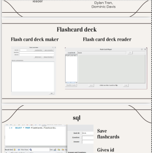

Projects:
Project Name:
Flash Card Deck

Project Description:
Flash Card Deck project is developed to make, manage and utilize flash cards. The project consists of two parts, one Flashcard deck maker and the other is Flashcard deck reader.
Flashcard deck maker can be utilized to create new deck of flashcards and the Flashcard deck reader is utilized to read the cards.
The application is designed as a standalone desktop system. Flashcards created by Flashcard deck maker can be saved locally in file format or in a database.
Technologies used:
Both Flashcard deck maker and Flashcard deck reader are developed in Java OpenJDK version 11.0. The Swing GUI components of Java is used for the graphical part.
The optional database support is provided by MySQL. Agile methodology is utilized for project development. Programs and related files were managed by Git. Discord is used for communications.
Challenges faced:
As this was a group effort, utilizing the same version of Java for every member of the project team was a challenge, as some had to utilize different versions for other projects.
Outcome:
Project Flash Card Deck developed, tested and deployed successfully.